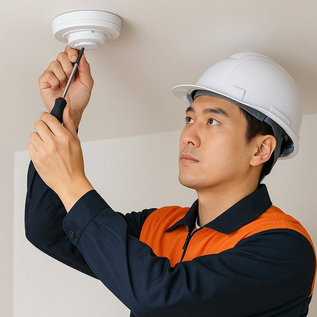
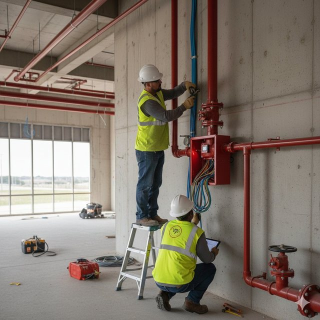
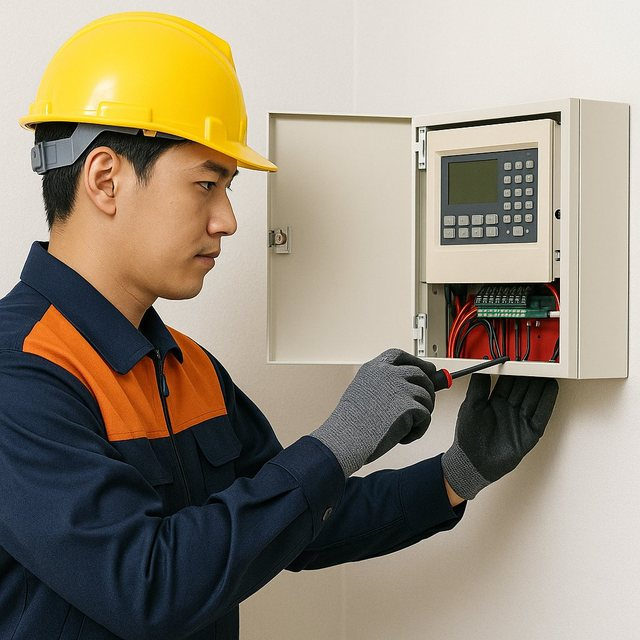
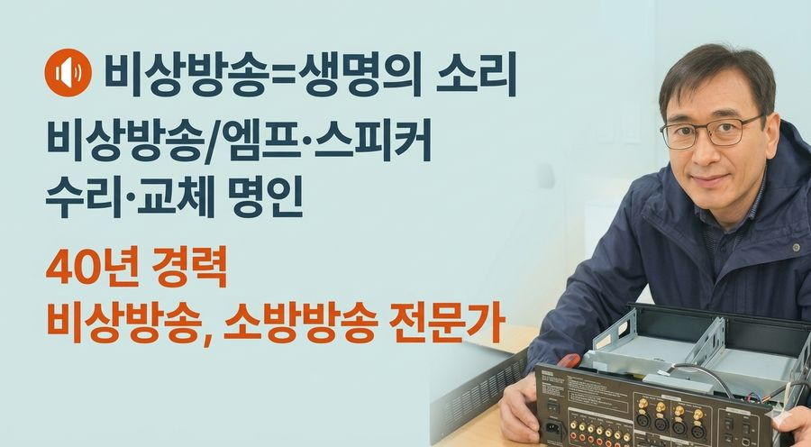
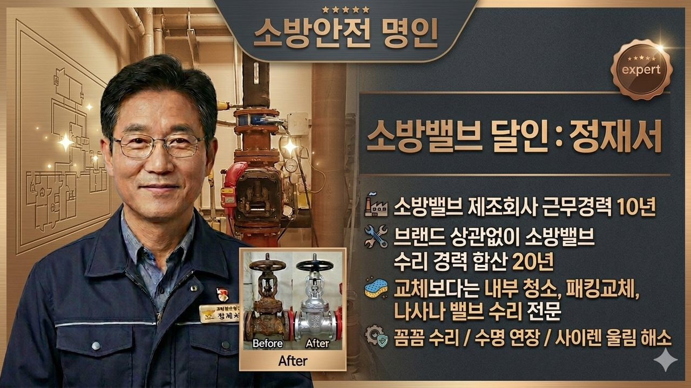
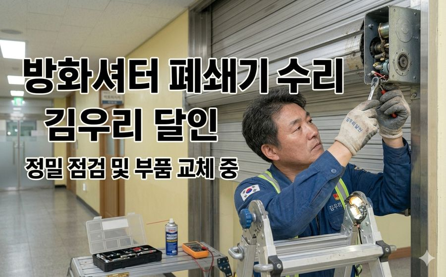
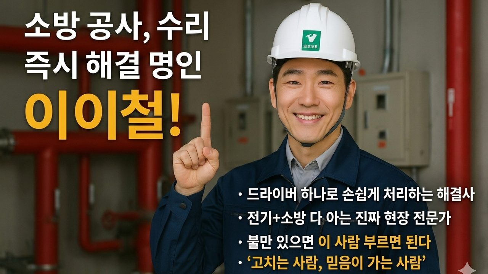

경보 설비 공사
- 자동화재탐지설비
- 비상경보설비
- 비상방송설비
- 자동화재속보설비
- 누전경보기
02-00
소방시설 4대 분야 공사 — 현장 실사부터 완공 필증까지 한 번에



현장을 대하는 3가지 약속
우리는 점검만 하고 떠나지 않습니다.
문제는 대부분 배관 내부, 천장 속 배선, 습기, 노후화처럼 눈에 보이지 않는 곳에 있습니다. 증상을 넘어 근본 원인을 추적해 조치하고 관리법까지 알려드립니다.
“고치는 게 기술입니다. 교체는 누구나 합니다.” 불필요한 공사와 교체를 권하지 않고, 고객의 부담을 줄입니다.
소방점검 체크리스트와 지적사항을 토대로, 형식이 아닌 위험을 줄이는 실질적인 작업을 합니다.
| 순위 | 공사 분야 | 주요 사유 | 주요 대상 시설물 |
|---|---|---|---|
| 1위 | 감지기 교체 | 오동작, 노후 | 빌딩, 아파트, 상가 |
| 2위 | 배선 보수·단선 | 단락(합선), 절연 불량 | 노후 건물 전체 |
| 3위 | 감지기 미설치·단선 | 누수, 부식 | 주상복합, 호텔 |
| 4위 | 유도등 교체 | 성능 미달 (점등 불량) | 공장, 공동주택 |
| 5위 | 발신기·경종 | 기기 고장, 노후 | 전 건물 |
| 6위 | 알람·프리액션 밸브 | 누수, 부식, 작동 불량 | 주상복합, 호텔 (스프링클러 설치 대상) |
| 7위 | 수신기 고장 교체 | 노후화 (오작동 반복) | 모든 건물 |
| 8위 | 스프링클러 헤드·배관 | 누수, 부식, 헤드 파손 | 주상복합, 호텔 |
| 9위 | 펌프 성능·조정 | 성능 미달(압력 부족), 누수 | 엔진펌프 설치 대상 |
| 10위 | 소화기 교체 | 노후 10년 이상, 압력 불량 | 모든 건물 |
단순 점검에 그치지 않고 아래 항목을 정밀 진단해 꼭 필요한 보수 공사만 제안합니다.
전문가 방문 진단, 최적의 공사법 제안
관할 소방서 서류 접수, 도면 검토
소방기술자 현장 배치, 정밀 시공
소방서 현장 확인, 필증 교부
02-01
🎁 출장 진단 무료 이벤트 · 수신기 2개 연동 기준 30만원 내외 수리 사례
“화재 시 대피 방송이 먹통이라면? 단순한 기계 고장이 아니라 인명 피해로 이어집니다.”
화재안전성능기준(NFPC 202)에 따라 비상방송은 화재 신호 후 10초 이내에 경보와 대피 음성이 송출되어야 합니다.
앰프 출력단 쇼트, 선로 단선, 감쇄기 불량, 방송 랙 기판 고장을 소방음향 명인이 추적·보수합니다.
수백~수천만 원이 드는 방송 랙 교체 대신 소자 단위 수리로 비용을 크게 줄입니다.
한 층이 쇼트나도 다른 층 방송은 나가도록 단락보호 설비를 보강합니다.
| 고장 부위 | 증상 · 수리 내용 | 정비 포인트 |
|---|---|---|
| 메인 앰프 / 랙 | 전원 불량, 출력 저하, 특정 층 방송 시 과전류 차단, SMPS 보수 | 예비전원(배터리) 성능 검사 포함 |
| 수신기 연동부 | 소방 신호 접점 불량으로 무반응, 연동 셀렉터 오류, 비상 멘트 음원 칩 교체 | 소방서 지적 단골 항목 해결 |
| 선로 단선·단락 | 노후·리모델링으로 생긴 쇼트 추적, 층별 절연저항 측정 | 층별 독립 송출 규격 보수 |
| 스피커 / 감쇄기 | 소리 찢어짐·무음 스피커 교체, 볼륨조절기 3선식 연동 배선 수정 | 비상시 최대 음량 강제 송출 |
지적명령서와 증상 확인
소방음향 전문가 출동
오실로스코프·메거로 원인 특정
기판 수리·쇼트 구간 보수
화재 신호 투입, 전 층 검증

달인이 서비스의 담당 달인 · 비상방송·앰프
“딱 보면 압니다. 바로 핵심 문제를 파악합니다.”
전원부 콘덴서 선제 교체, 출력 소자·방열 개선, 문제 구역 스피커 라인 재정비 후 정전·화재 가정 시험까지 완료. “이제는 소방서 점검에도 자신 있게 설명할 수 있다”는 관리사무소 평가.
02-02
“밸브가 이상하다고 무조건 교체할 필요는 없습니다. 내부 부품만 고쳐도 수명이 늘어납니다.”
프리액션(준작동식)·알람밸브의 오동작, 압력 스위치 이상, 클래퍼 누수를 정밀 진단합니다.
시트·패킹·트림 부품 교체로 밸브 본체 교체 비용을 아낍니다.
1차·2차 압력과 압력챔버를 법정 방수 압력에 맞게 조정합니다.
감지기 동작 → 솔레노이드 개방 → 경보까지 실제 연동을 검증합니다.

달인이 서비스의 담당 달인 · 알람·프리액션 밸브
“닦고 조이면 새것보다 더 오래갑니다.”
배관 이물질로 클래퍼 밀착이 방해된 원인을 찾아 내부 청소·면치기·패킹 교체로 해결. 밸브 통교체 없이 정상화.
02-03
“갑자기 내려온 방화셔터, 화재 때 내려오지 않는 방화셔터. 둘 다 시한폭탄입니다.”
모터 브래킷 유격 조정, 폐쇄기 교체, 연동제어기 보수, 슬랫 변형 교정까지 한 번에.
연기 감지 시 일부 하강, 열 감지 시 완전 폐쇄되도록 법적 규격에 맞춥니다.
고가 모터 교체 없이 정밀 유격 조정만으로 정상화한 사례가 많습니다.
지하주차장 셔터 오작동으로 차량이 갇히면 즉시 출동해 수동 개방부터 합니다.
| 점검 부위 | 증상 · 보수 항목 | 정비 포인트 |
|---|---|---|
| 모터 구동부 | 모터 회전 불량, 브래킷 미세 유격, 체인 장력·구리스 | 전체 교체 없이 유격 조정 |
| 연동제어기 | 감지기 작동 시 미전개, 기판·파워 교체, 수동 스위치 단선 | 수신기 신호와 100% 연동 검증 |
| 폐쇄기 / 리미트 | 자동폐쇄기 성능 저하, 상승 리미트·하강 정지점 조정 | 2단 하강 규격 셋팅 |
| 슬랫 / 가이드레일 | 차량 충돌로 휜 슬랫 교정, 레일 이물질 청소 | 걸림·끼임 사고 예방 |
오작동·차량 고립 상황 파악
대기 차량 안전 통과 조치
폐쇄기·브래킷 유격 확인
교체 없는 튜닝 시공
반복 작동 확인 후 인도

달인이 서비스의 담당 달인 · 방화셔터
“‘전체 교체’라는 말에 속지 마세요.”
차량 고립 상황에 출동해 수동 개방부터 조치. 폐쇄기 모터 브래킷 미세 유격을 찾아 부품 교체 없이 비용 0원으로 정상화, 5회 연속 작동 시험 후 인도.
02-04
“스프링클러는 불이 났을 때 가장 먼저 사람을 지키는 설비입니다.”
천장 높이 변경, 인테리어 공사에 따른 헤드 상·하향 조정과 증설.
배관 부식·이음부 누수를 찾아 보수하고, 누수 피해는 보험 연계까지 안내합니다.
고시원·다중이용업소 화재안전조사 후 요구되는 간이스프링클러 설비 공사.
주펌프·충압펌프 교체와 패킹 보수, 압력챔버 기밀 작업.

달인이 서비스의 담당 달인 · 소방공사·보수
“사람의 생명과 직결된 일, 최고의 전문성으로 지킵니다.”
여러 업체가 해결하지 못한 문제를 회로 계통 진단으로 단 15분 만에 해결.
02-05
“밤마다 울리는 경보, 꺼지지 않는 고장 표시등. 원인은 대부분 선로와 접점에 있습니다.”
감지기 선로 단선·단락, 습기 침투, 종단저항 불량을 회로별로 추적합니다.
기판·전원부 수리로 해결 가능한지 먼저 보고, 교체는 마지막 선택지로 둡니다.
P형/R형 노후 수신기 교체와 셋팅, 경계구역일람표 정비까지 진행합니다.
평상시 '연동 정지' 상태로 두는 것은 소방법 위반입니다. 정상 연동 상태로 복구합니다.
이 서비스의 담당 달인 · 소방공사·보수
“사람의 생명과 직결된 일, 최고의 전문성으로 지킵니다.”
여러 업체가 해결하지 못한 문제를 회로 계통 진단으로 단 15분 만에 해결.
02-06
“소방점검 후 받은 조치명령서, 소방 면허를 가진 전문가에게 맡겨야 합법적으로 끝납니다.”
소방시설공사업법상 무자격 시공은 처벌 대상입니다. 면허팀이 직접 시공합니다.
감지기 증설·이설, 유도등 LED 교체, 완강기, 제연 댐퍼, 시각경보기까지.
인테리어 시 소방시설 완비증명 공사, 주방 자동소화장치, 비상구 공사.
보수 완료 후 이행 결과 보고서 작성까지 원스톱으로 마감합니다.
점검 지적사항·도면 검토
기계·전기 소방 면허 전담
KFI 인증 정품 자재 사용
실제 작동 피드백 확인
완료 보고서 제출
이 서비스의 담당 달인 · 소방공사·보수
“사람의 생명과 직결된 일, 최고의 전문성으로 지킵니다.”
여러 업체가 해결하지 못한 문제를 회로 계통 진단으로 단 15분 만에 해결.
OTHER DOORS
No. 01 FIRE SAFETY
우리 건물, 올해 점검은 끝났나요?
법정 소방점검부터 셀프점검, 소화기 납품, 매월 안전관리 대행까지.
담당 달인 강현준 · 이이철 · 김명수 ENTERNo. 03 LEGAL INSPECTION
놓치고 있는 법정 의무는 없나요?
정보통신, 기계설비, 저수조, 소독방역, 공기질, 승강기. 매달 돌아오는 의무를 한 번에 챙깁니다.
담당 달인 경광순 · 강경훈 · 박청수 외 3인 ENTERNo. 04 BUILDING CARE
관리비는 줄이고, 사고는 막을 수 없을까요?
보험부터 종합건물관리, 무인관리, 주차장, 청소·경비, 관리비 절감까지.
담당 달인 이현 · 김명수 · 강경훈 외 4인 ENTER